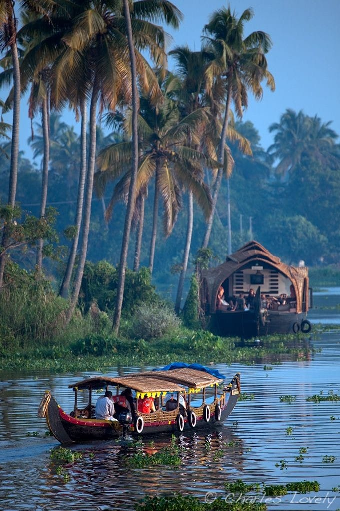
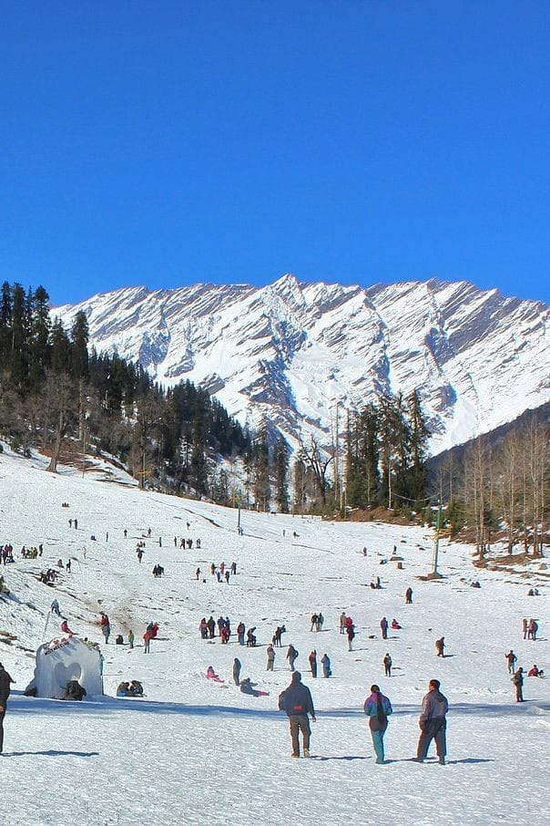
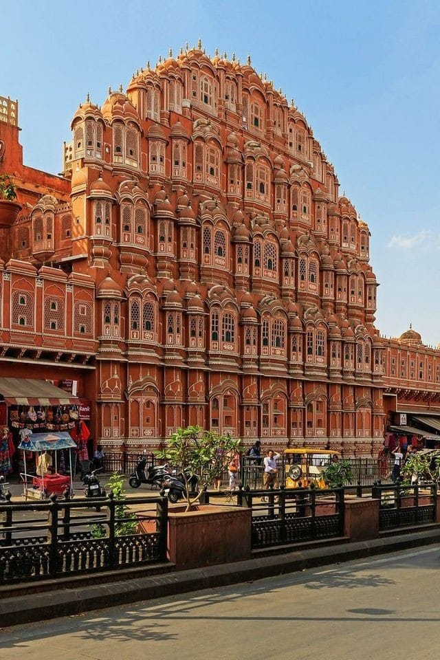
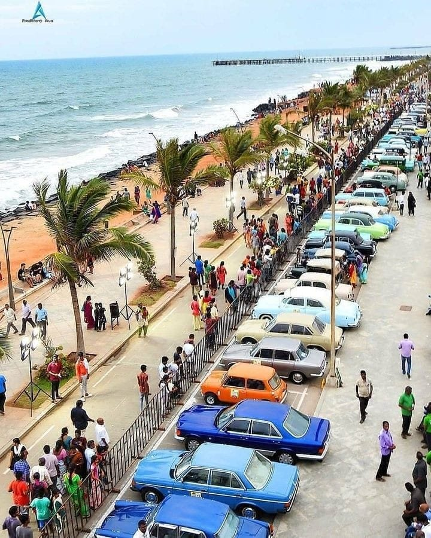
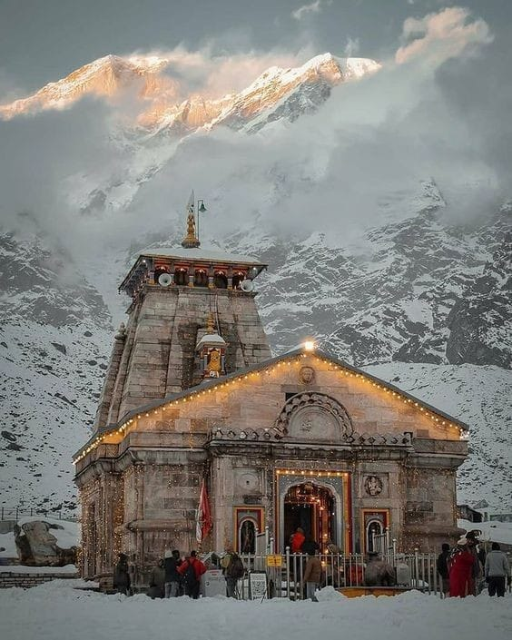
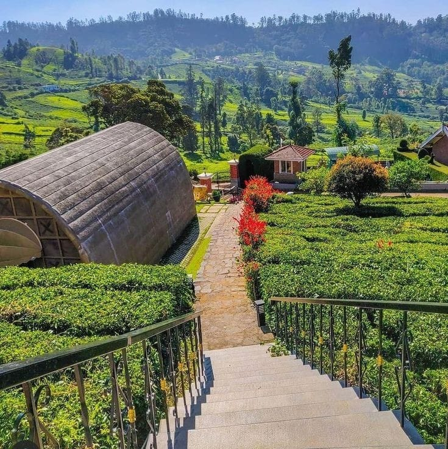
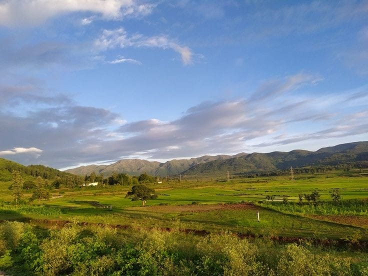
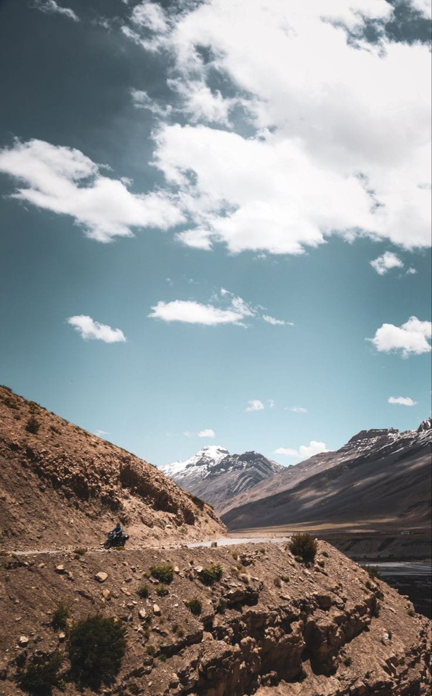
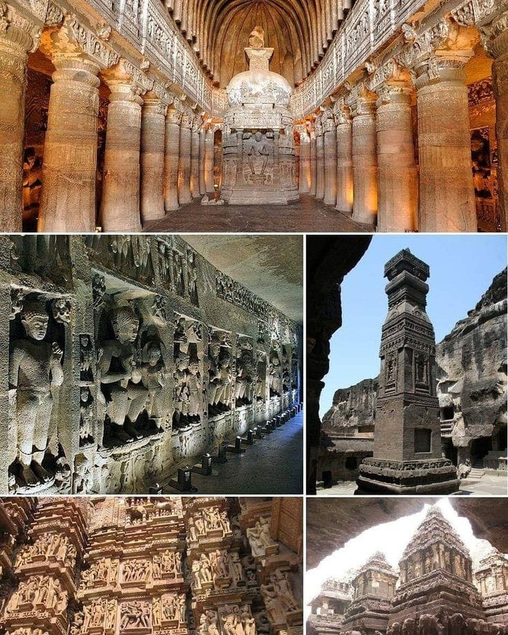
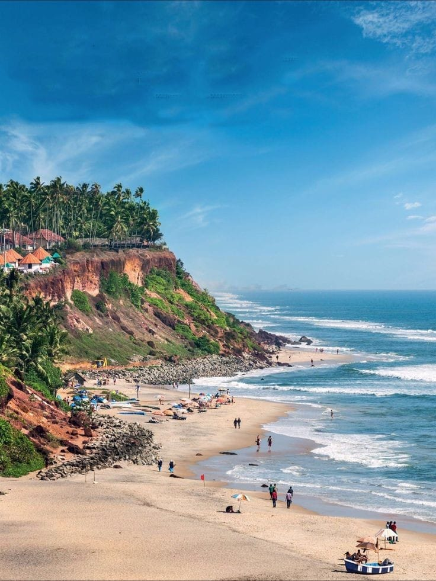

Kerala, often referred to as "God's Own Country," captivates tourists with its enchanting natural beauty and vibrant cultural heritage. Nestled in the southwestern part of India, this coastal state is renowned for its tranquil backwaters, lush green landscapes, and pristine beaches. Visitors can embark on a serene houseboat cruise through the intricate network of backwaters in Alleppey or explore the spice-scented hills of Munnar. Kerala's rich cultural tapestry is reflected in its traditional dance forms like Kathakali and Mohiniyattam, adding a touch of artistic allure to the tourist experience. With its diverse offerings, including Ayurvedic retreats and wildlife sanctuaries, Kerala stands as a sought-after destination for those seeking a harmonious blend of nature, culture, and rejuvenation.
Nestled in the lap of the majestic Himalayas, Manali beckons travelers with its breathtaking landscapes and adventurous spirit. This popular hill station in the Indian state of Himachal Pradesh offers a panoramic canvas of snow-capped peaks, lush valleys, and meandering rivers. Adventurous souls can indulge in thrilling activities such as paragliding, skiing, and trekking, while those seeking tranquility can explore the serene Solang Valley or take a stroll through the vibrant Old Manali. The town also serves as a gateway to the enchanting Lahaul and Spiti valleys, adding an extra layer of allure to its appeal. With a perfect blend of natural beauty and adrenaline-pumping experiences, Manali remains a magnet for tourists seeking a memorable mountain escape.
Jaipur, the capital city of Rajasthan, stands as a testament to India's rich cultural heritage and royal history. Known as the "Pink City" due to its vibrant pink-hued architecture, Jaipur is a treasure trove of palaces, forts, and historic monuments. The magnificent Hawa Mahal, the grand City Palace, and the imposing Amber Fort are among the many architectural marvels that transport visitors back to the era of Maharajas. Jaipur's bustling bazaars, filled with colorful textiles, handicrafts, and traditional jewelry, offer a delightful shopping experience. The city's cultural vibrancy is further enhanced by its lively festivals, such as the famous Jaipur Literature Festival, making it a captivating destination for those seeking a blend of regal history and vibrant traditions.
Pondicherry, a serene coastal town on the southeastern coast of India, invites travelers with its unique blend of French colonial charm and Indian spirituality. Known for its cobblestone streets, colonial-era architecture, and vibrant markets, the White Town area showcases the French influence with its pastel-colored buildings and bougainvillea-lined avenues. Auroville, an experimental township near Pondicherry, is a symbol of spiritual unity and eco-conscious living. The town's picturesque beaches, such as Paradise Beach and Auroville Beach, provide tranquil retreats, while the Sri Aurobindo Ashram offers a spiritual haven. Pondicherry's fusion of cultures, tranquil ambiance, and cultural diversity make it a distinctive and enchanting destination for those seeking a peaceful escape.
Kedarnath, nestled in the Garhwal Himalayas, is a sacred pilgrimage site and a haven for nature enthusiasts. Home to the revered Kedarnath Temple, dedicated to Lord Shiva, the town is situated at an altitude of 3,583 meters, surrounded by snow-capped peaks and pristine landscapes. Pilgrims embark on a challenging trek or use alternative modes of transportation to reach this divine destination. The temple, believed to be over a thousand years old, is part of the Char Dham Yatra, drawing devotees seeking spiritual solace. Kedarnath's awe-inspiring scenery and religious significance create a unique appeal, making it a cherished destination for both religious and nature-seeking travelers alike.
Nestled in the Nilgiri Hills of Tamil Nadu, Ooty, or Udhagamandalam, is a captivating hill station known for its scenic beauty and pleasant climate. The lush green landscapes, sprawling tea estates, and vibrant flower gardens paint a picturesque backdrop for visitors. The historic Nilgiri Mountain Railway, a UNESCO World Heritage Site, offers a charming journey through the hills. Ooty Lake is a popular spot for boat rides, while Doddabetta Peak provides panoramic views of the surrounding hills. With its colonial charm, botanical gardens, and a delightful blend of nature and culture, Ooty remains a cherished destination for those seeking a tranquil retreat in the lap of the Western Ghats.
Nestled in the Eastern Ghats of Andhra Pradesh, Araku Valley is a serene hill station renowned for its lush landscapes and indigenous tribal culture. The journey to Araku is as enchanting as the destination itself, with a scenic drive or a mesmerizing train ride passing through verdant hills and tunnels. Coffee plantations, which thrive in the region's cool climate, contribute to Araku's unique allure. The Valley offers a perfect blend of nature and tribal heritage, with attractions like the Padmapuram Gardens and the Tribal Museum providing insights into the local way of life. Araku's cool climate, cascading waterfalls, and picturesque viewpoints make it a refreshing and idyllic retreat for nature enthusiasts and those seeking a cultural escape.
Ladakh, often referred to as the "Land of High Passes," is a breathtaking region in the northern part of India, known for its rugged landscapes and Tibetan-Buddhist culture. Surrounded by majestic snow-capped peaks, Ladakh offers an unparalleled experience for adventure enthusiasts and nature lovers alike. The ancient monasteries, such as Hemis and Thiksey, showcase the rich cultural heritage of the region. The Pangong Lake, with its ever-changing hues, and the Nubra Valley, known for its dramatic sand dunes, add to Ladakh's mystical charm. With its stark beauty, vibrant festivals, and opportunities for trekking and mountaineering, Ladakh stands as a unique and mesmerizing destination for those seeking an unforgettable Himalayan adventure.
The Ajanta Caves, a UNESCO World Heritage Site in Maharashtra, India, stand as a testament to ancient Indian art and architecture. Carved into the rock face of a horseshoe-shaped gorge, these 2,000-year-old caves house stunning murals and sculptures depicting Buddhist religious art. The intricate detailing and vibrant colors of the frescoes narrate stories from Jataka tales and showcase the life of Buddha. Visitors are transported to a bygone era as they explore the 30 rock-cut caves that served as monastic retreats and prayer halls. The Ajanta Caves remain a treasure trove of India's artistic heritage, drawing history enthusiasts and art lovers from around the world.
Goa, the pearl of the Indian coastline, beckons visitors with its sun-kissed beaches, vibrant nightlife, and rich cultural tapestry. Renowned for its colonial architecture, spice plantations, and bustling flea markets, Goa offers a diverse range of experiences. From the historic churches of Old Goa, including the UNESCO-listed Basilica of Bom Jesus, to the lively beach shacks lining the shores of Baga and Anjuna, the state is a seamless blend of tradition and modernity. Water sports enthusiasts flock to its shores, while the Dudhsagar Waterfalls and spice tours add a touch of natural allure. With its warm hospitality, distinct cuisine, and a lively atmosphere, Goa stands as a perennial favorite for those seeking a tropical escape.
